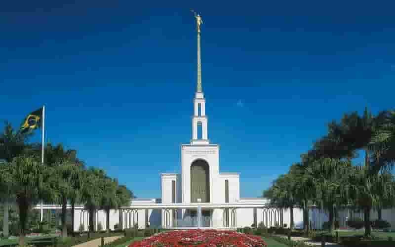
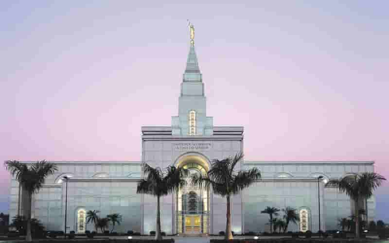
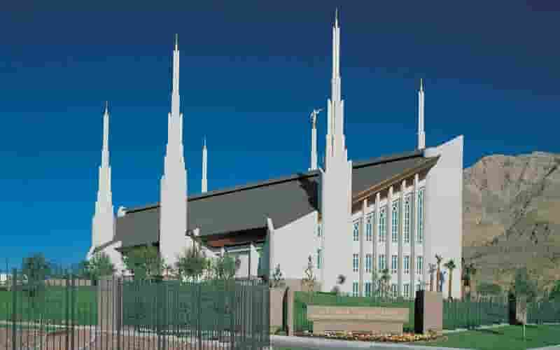
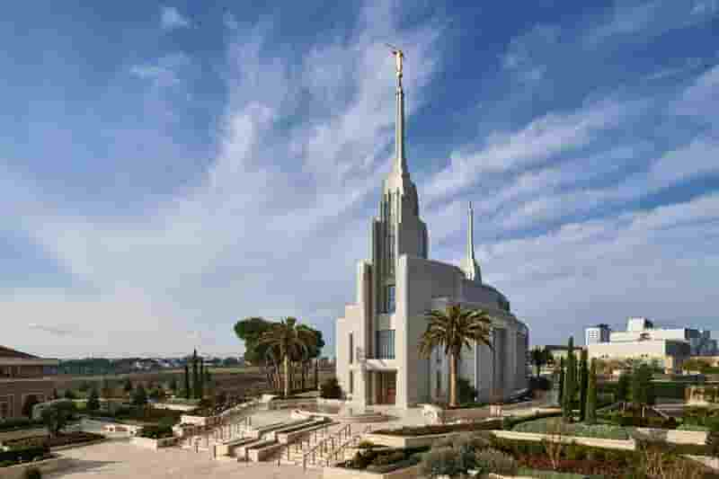
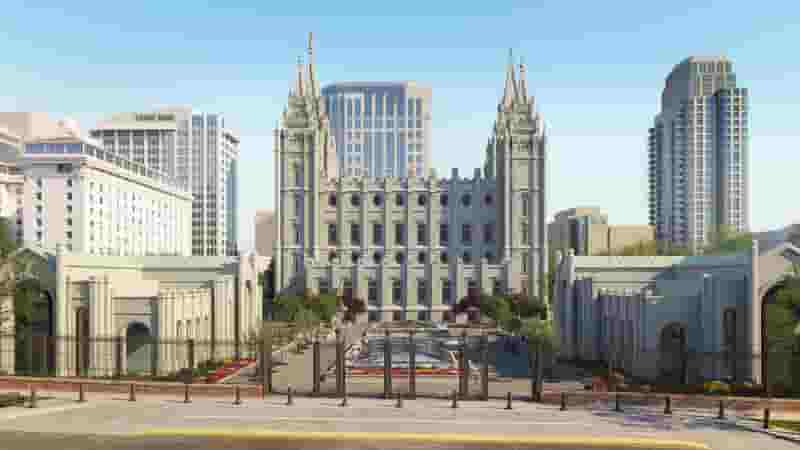

Página Inicial

LOCALIZAÇÃO: Aba, Nigéria
DEDICADO: 2005, 7 de agosto
TAMANHO: 11500 pés quadrados

LOCALIZAÇÃO: Manti, Utah, Estados Unidos
DEDICADO: 1888, 21 de maio
TAMANHO: 74792 pés quadrados

LOCALIZAÇÃO: Payson, Utah, Estados Unidos
DEDICADO: 2015, 7 de junho
TAMANHO: 96630 pés quadrados

LOCALIZAÇÃO: Yigo, Guam
DEDICADO: 2020, 2 de maio
TAMANHO: 6861 pés quadrados

LOCALIZAÇÃO: Kensington, Maryland, Estados Unidos
DEDICADO: 1974, 19 de novembro
TAMANHO: 156558 pés quadrados

LOCALIZAÇÃO: Lima, Peru
DEDICADO: 1986, 10 de janeiro
TAMANHO: 9600 pés quadrados

LOCALIZAÇÃO: Cidade do México, México
DEDICADO: 1983, 2 de dezembro
TAMANHO: 116642 pés quadrados

LOCALIZAÇÃO: São Paulo, Brasil
DEDICADO: 1978, 30 de outubro
TAMANHO: 59246 pés quadrados

LOCALIZAÇÃO: Campinas, São Paulo, Brasil
DEDICADO: 2002, 17 de maio
TAMANHO: 48100 pés quadrados

LOCALIZAÇÃO: Las Vegas, Nevada, Estados Unidos
DEDICADO: 1989, 16 de dezembro
TAMANHO: 80350 pés quadrados

LOCALIZAÇÃO: Roma, Itália
DEDICADO: 2019, 10 de março
TAMANHO: 41010 pés quadrados

LOCALIZAÇÃO: Salt Lake City, Utah, Estados Unidos
DEDICADO: 1893, 6 de abril
TAMANHO: 253015 pés quadrados